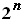

Един от начините за решеване на задачата е генерирането
на всички подмножества на множеството на монетите и намиране на съответните
суми. Най - естествения начин в това отношение е пълното изчерпване, базирано
на рекурсивен алгоритъм с връщане. На всяка стъпка към текущото множество
от монети се добавя нова монета, след което се извършва рекурсивно обръщение.
Всяка получена сума се проверява с търсената и при равенство се прекратява
рекурсивния процес. Към решението може да се добави и една оптимизация, произтичаща
от строго положителната стойност на монетите. Ще прекратяваме по - нататъшното
търсене, ако текущата сума надхвърли проверяваната сума. Тъй като броят на
всички подмножества на дадено n - елементно множество е 
, то алгоритъма ще има експоненциална алгоритмична сложност O(
).
#include <cstdlib>
#include <cstring>
#include <fstream>
#include <iostream>
using namespace std;
#define MAXCOINS 1000
#define MAXSUM 1000
ifstream fin("file.inp",ios::in);
ofstream fout("file.out",ios::out);
unsigned coins[MAXCOINS];
bool can[MAXSUM];
unsigned sum;
unsigned n;
void Check(int ind, int cur_sum){
if(cur_sum == sum){
fout <<"Yes";
exit(1);
}
for(int i=ind; i<=n; i++)
if(!can[i]){
can[i]=true;
Check(i,cur_sum+coins[i]);
can[i]=false;
}
}
int main(){
while(fin >>sum >>n){
for(int i=0; i<n; i++)
fin >>coins[i];
memset(can,false,MAXSUM);
Check(0,0);
fout
<<"No";
}
system("PAUSE");
return 0;
}